Funciones de varias variables
Funciones con varias entradas y un número de salida: cómo hallar su dominio y su imagen, cómo «verlas» con la gráfica y las curvas de nivel, y, sobre todo, qué significa que tengan límite y sean continuas cuando hay infinitos caminos para acercarse a un punto.
0Antes de empezar U pp.152-153
Una función de dos variables es una «máquina» con dos botones de entrada, $x$ e $y$, y una pantalla de salida con un número $f(x,y)$ (la temperatura de cada punto de una placa metálica, por ejemplo). Todo lo que sabías de una variable (dominio, imagen, límite, continuidad) sigue teniendo sentido, con una diferencia que lo cambia casi todo: en la recta solo hay dos formas de acercarse a un punto (por la izquierda y por la derecha); en el plano hay infinitos caminos. Por eso los límites son la parte difícil del tema.
U pp.152-153Qué necesitas saber ya
- Dominio y funciones elementales en una variable: raíz par $\Rightarrow$ argumento $\ge0$; logaritmo $\Rightarrow$ argumento $>0$; denominador $\ne0$; arcoseno y arcocoseno: argumento en $[-1,1]$ (Temas 1-2).
- Límites y continuidad en una variable (§1.4): $\lim_{x\to a}f(x)=l$, límites laterales, regla del emparedado, «infinitésimo por acotada».
- Distancia en $\mathbb R^2$, disco abierto y coordenadas polares (tema 4.1): $x=\rho\cos\theta$, $y=\rho\operatorname{sen}\theta$.
- Cónicas elementales: circunferencia, parábola, elipse, hipérbola (se reconocen dividiendo para dejar «$=1$»).
Mapa del tema
| Apartado | Qué contiene | Dónde está |
|---|---|---|
| 1 Dominio e imagen | Def. 4.3, convenio del dominio, operaciones y composición | U pp.153-158 |
| 2 Gráfica y curvas de nivel | gráfica en $\mathbb R^3$, trazas, curvas de nivel | U pp.155-157 |
| 3 Límites | Def. 4.4, caminos, reiterados, emparedado, polares | U pp.158-165 |
| 4 Continuidad | Def. 4.5-4.7, propiedades, ejemplos | U pp.166-167 |
| 5 Ejercicios de E | 4.9-4.24 (16 ejercicios) | E pp.142-153 |
| 6 Ejemplos propios | 5 ejemplos | propio |
| 7 Examen | 7 problemas de X | X |
| 8 Chuleta y comprobación | fórmulas, flujo del límite, errores, lista | síntesis |
Qué se pide en los ejercicios y en el examen
(A) Dominio (y a veces imagen) de una expresión con raíces y logaritmos, dibujándolo (X 2018, 2019; E 4.13-4.15, 4.21). (B) Curvas de nivel: despejar $f=C$ y reconocer la curva (X 2017; E 4.17-4.18). (C) ¿Existe el límite?: demostrar que no con dos caminos (E 4.19, 4.20, 4.23; X 2013, 2014, 2018) o calcularlo con polares o emparedado (X 2016). (D) Continuidad de una función «a trozos» en el origen (E 4.21-4.24; X 2014, 2017, 2018). Es la mitad de un problema típico: casi todos los exámenes traen un límite o una continuidad.
1Función de dos variables: dominio e imagen U pp.153-158
Coloca una placa metálica sobre el plano. En cada punto $(x,y)$ de la placa hay una temperatura $T(x,y)$: a cada pareja de coordenadas le corresponde un único número. Eso es una función de dos variables. El dominio es «dónde está la placa» (los puntos donde la función está definida); la imagen es el conjunto de temperaturas que realmente se alcanzan. Si además la temperatura depende del tiempo, $T(x,y,t)$, ya son tres variables: lo mismo, con una entrada más.
U p.152Una función $f:D\subset\mathbb R^2\to\mathbb R$ asigna a cada $(x,y)\in D$ un único número real $f(x,y)$. $D$ es el dominio y $f(D)=\{f(x,y):(x,y)\in D\}$ es la imagen. Se escribe $z=f(x,y)$: $x,y$ son las variables independientes y $z$ la dependiente. Para $n$ variables, $f:D\subset\mathbb R^n\to\mathbb R$, igual.
Convenio: si no se indica el dominio, es el mayor conjunto donde la expresión tiene sentido.
U pp.153-154Exactamente como en una variable: raíz par $\Rightarrow$ radicando $\ge0$ (¡cuidado!: la nota al margen de U p.153 dice «mayor que cero», pero $\sqrt0=0$ existe: lo correcto es $\ge0$); logaritmo $\Rightarrow$ argumento $>0$; fracción $\Rightarrow$ denominador $\ne0$; arcoseno/arcocoseno $\Rightarrow$ argumento en $[-1,1]$. Si hay varias piezas sumadas, multiplicadas o dividas, el dominio es la intersección de las condiciones. Después se dibujan las fronteras y se decide con un punto de prueba de qué lado está la región, y si el borde entra ($\le$, $\ge$) o no ($<$, $>$).
U p.153$f(x,y)=2x^2+3y^4$. Es un polinomio: dominio $\mathbb R^2$. Como $x^2\ge0$ e $y^4\ge0$, $f\ge0$; y $f(x,0)=2x^2$ toma todos los valores $\ge0$. Imagen: $[0,\infty)$.
U p.153$f(x,y)=\sqrt{1+x^2-y}$. Evaluar: $f(1,1)=\sqrt1=1$; $f(-3,0)=\sqrt{10}$; $f(t,t^2)=\sqrt1=1$ para todo $t$. Dominio: radicando $\ge0$, es decir $y\le1+x^2$: los puntos sobre o debajo de la parábola $y=1+x^2$ (Figura 4.9). Imagen: $[0,\infty)$ (una raíz nunca es negativa, y se alcanza cualquier valor $s\ge0$ con $y=1+x^2-s^2$).
U pp.153-154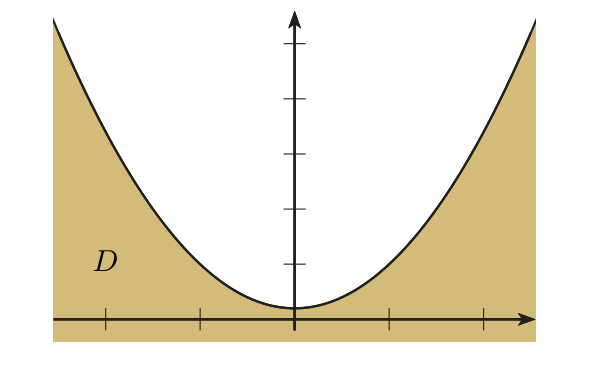
Operaciones y composición U pp.157-158
Se pueden sumar, restar, multiplicar, dividir y multiplicar por una constante (es operar con números, punto a punto): $(f+g)(x,y)=f(x,y)+g(x,y)$, $(f/g)(x,y)=f(x,y)/g(x,y)$ si $g(x,y)\ne0$. U pide que los dominios coincidan; en la práctica se toma la parte común, es decir, el dominio de la suma o del producto es la intersección de los dominios P (y para el cociente se quitan además los ceros de $g$).
- 4.12. $f=x^2y$, $g=e^{xy}$: $3f=3x^2y$, $f+g=x^2y+e^{xy}$, $fg=x^2ye^{xy}$, $f/g=x^2ye^{-xy}$ (existe en todo $\mathbb R^2$ porque $e^{xy}\ne0$).
- 4.13 (composición con una función de una variable). $f(x,y)=x^2-y^2+xy$, $g(x)=\cos x$: $g\circ f(x,y)=\cos(x^2-y^2+xy)$. Para poder componer, la imagen de $f$ debe estar en el dominio de $g$.
- 4.14 (cambio de variable). $h(x,y)=x^2-y^2+xy$ y $g(\rho,\theta)=(\rho\cos\theta,\rho\operatorname{sen}\theta)$: $h\circ g=\rho^2\cos^2\theta-\rho^2\operatorname{sen}^2\theta+\rho^2\cos\theta\operatorname{sen}\theta$. Es la sustitución por polares que se usará en los límites.
(i) Olvidar que la función debe dar un único valor por punto: no toda ecuación en $x,y,z$ define una función (E 4.12). (ii) Dar el dominio de una suma como la unión en vez de la intersección. (iii) Dividir una desigualdad por una variable sin mirar su signo (E 4.14, 4.21).
2Gráfica y curvas de nivel U pp.155-157
En una variable, la gráfica de $y=f(x)$ es una curva dibujada en un plano. Con dos variables la gráfica necesita una dimensión más: a cada punto $(x,y)$ del suelo se le añade una altura $z=f(x,y)$ y queda una superficie en $\mathbb R^3$, como un paisaje de montañas y valles. Como dibujar superficies es difícil, se usa el truco de los mapas topográficos: se corta el paisaje con planos horizontales $z=k$ y se proyecta cada corte sobre el suelo. Cada línea resultante es una curva de nivel («todos los puntos a la misma altura $k$»). Las curvas de nivel están también en los mapas del tiempo (puntos con la misma presión).
U p.155La gráfica de $f:D\subset\mathbb R^2\to\mathbb R$ es $\{(x,y,z)\in\mathbb R^3:(x,y)\in D,\ z=f(x,y)\}$. Su proyección sobre el plano $xy$ es el dominio y sobre el eje $z$, la imagen.
Las intersecciones de la gráfica con planos $z=k$ se llaman trazas. La proyección de la traza sobre el plano $xy$ es la curva de nivel $k$ (o curva de contorno): $\{(x,y)\in D: f(x,y)=k\}$. Con tres variables se habla de superficies de nivel.
U p.155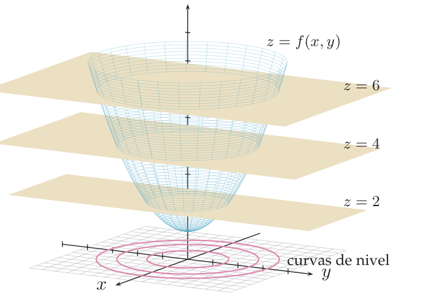
Curva de nivel $k$: $x^2+y^2+1=k$, es decir $x^2+y^2=k-1$.
- $k<1$: $x^2+y^2=k-1<0$ es imposible. Curva vacía.
- $k=1$: $x^2+y^2=0$, solo el punto $(0,0)$.
- $k>1$: circunferencia de centro $(0,0)$ y radio $\sqrt{k-1}$.
- Cortes con planos $x=c$: $z=y^2+c^2+1$, parábolas. Como las trazas son circunferencias, la gráfica es una parábola girada: el paraboloide de revolución (Figura 4.11).
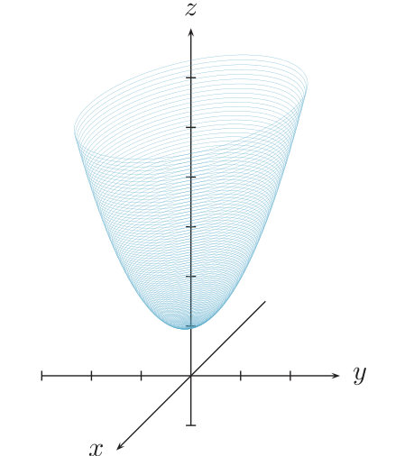
(1) Escribe $f(x,y)=C$. (2) Pasa las constantes a un lado y despeja hasta reconocer la curva. (3) Discute según el signo de lo que quede: normalmente «positivo: curva», «cero: punto, par de rectas…», «negativo: vacía». (4) Di para qué valores de $C$ hay curva: eso es la imagen de $f$.
Confundir la curva de nivel (un conjunto del plano $xy$, $f=C$) con la gráfica (una superficie de $\mathbb R^3$), o con «fijar una variable»: $f(x,2)$ es una función de $x$ (un corte vertical), mientras que $f(x,y)=2$ es una curva del plano.
3Límite de una función de dos variables U pp.158-165
En una variable, para decidir si $f(x)\to l$ cuando $x\to a$ basta mirar por la izquierda y por la derecha. En el plano puedes acercarte al punto $(a,b)$ por una recta, por una parábola, por una espiral… (Figura 4.12). Diremos que el límite es $l$ si, por cualquier camino, $f$ se acerca a $l$. Si dos senderos llegan a «alturas» distintas, el límite no existe. Y, por muchos senderos que pruebes, probarlos no basta para demostrar que existe: hay infinitos caminos. Esta asimetría ordena todo el tema:
- Para demostrar que NO existe: basta encontrar dos caminos con límites distintos (o un camino con un límite que depende de un parámetro).
- Para demostrar que SÍ existe: hay que acotar $|f-l|$ por algo que tiende a $0$ (emparedado, «infinitésimo por acotada», polares).
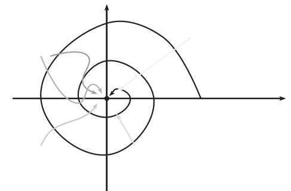
La definición (Def. 4.4)
Sea $f(x,y)=2x+y$ y $(a,b)=(0,0)$; el candidato es $l=0$. Alguien nos reta: «quiero que $f$ esté a menos de $\varepsilon=0{,}3$ de $0$». ¿Hasta qué distancia del origen hay que quedarse? Probemos con $\delta=0{,}1$: si $d((0,0),(x,y))=\sqrt{x^2+y^2}<0{,}1$, entonces $|x|<0{,}1$ y $|y|<0{,}1$, luego $|2x+y|\le2|x|+|y|<0{,}2+0{,}1=0{,}3$. Funciona. No vale cualquier $\delta$: con $\delta=0{,}2$ falla, porque $(0{,}19;\,0)$ está a distancia $0{,}19<0{,}2$ del origen y $2x+y=0{,}38>0{,}3$. Si el reto fuera cualquier $\varepsilon>0$, serviría $\delta=\varepsilon/3$ (la misma cuenta da $|f|<3\delta=\varepsilon$).
P$\displaystyle\lim_{(x,y)\to(a,b)}f(x,y)=l$ si para todo $\varepsilon>0$ existe $\delta>0$ tal que $$0<d\big((a,b),(x,y)\big)<\delta\ \Longrightarrow\ |f(x,y)-l|<\varepsilon,$$ siempre que $(x,y)$ esté en el dominio de $f$. En palabras: dentro del disco abierto de centro $(a,b)$ y radio $\delta$ (sin el centro), $f$ está entre $l-\varepsilon$ y $l+\varepsilon$ (Figura 4.13). Para $n$ variables, igual con $d$ en $\mathbb R^n$.
U pp.159-160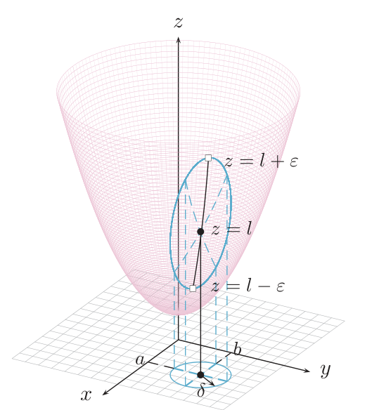
Si $\lim_{(x,y)\to(a,b)}f(x,y)=l$ y $\lim_{(x,y)\to(a,b)}g(x,y)=m$, entonces $\lim_{(x,y)\to(a,b)}cf=cl$, $\lim_{(x,y)\to(a,b)}(f+g)=l+m$, $\lim_{(x,y)\to(a,b)}fg=lm$ y $\lim_{(x,y)\to(a,b)}\frac fg=\frac lm$ si $m\ne0$.
U p.160Paso 1 · Sustituir; paso 2 · refutar con caminos U pp.161-163
Si $f$ es continua en $(a,b)$ (polinomio, cociente cuyo denominador no se anula allí, composición de elementales definidas allí), el límite es simplemente $f(a,b)$ (ver apartado 4). Si sale $\tfrac00$ hay que trabajar. La herramienta más sencilla reduce el problema a límites de una variable (los «caminos»):
- Límites reiterados. Mantén una variable fija, calcula el límite en la otra y luego en la primera: $\displaystyle\lim_{y\to b}\Big(\lim_{x\to a}f(x,y)\Big)$ y $\displaystyle\lim_{x\to a}\Big(\lim_{y\to b}f(x,y)\Big)$ deben coincidir (con $l$).
- Rectas. Por $y=mx+k$ con $b=ma+k$ (o $x=m'y+k'$) debe salir siempre $l=\lim_{x\to a}f(x,mx+k)$, sin depender de $m$.
- Curvas. Por $y=g(x)$ con $g(a)=b$ (o $x=h(y)$) debe salir el mismo $l=\lim_{x\to a}f(x,g(x))$.
Si alguno de estos límites depende del camino, el límite no existe. Pero si todos coinciden, NO se puede afirmar que el límite exista: son condiciones necesarias, no suficientes.
U pp.161-162$f(x,y)=y-x+\tfrac12xy+1$ en $(1,1)$. Por la recta $y=1$: $\lim_{x\to1}\big(1-x+\tfrac12x+1\big)=\tfrac32$. Por la recta $x=1$: $\lim_{y\to1}\big(y-1+\tfrac12y+1\big)=\tfrac32$. Coinciden, pero eso no demuestra nada; el límite existe porque $f$ es un polinomio (continua) y vale $f(1,1)=\tfrac32$.
U p.162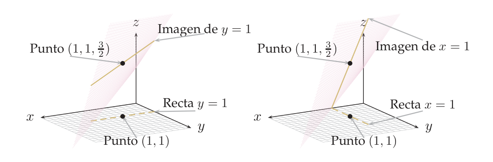
$f(x,y)=\dfrac{x^3y}{x^6+y^2}$ en $(0,0)$. Reiterados: ambos valen $0$. Rectas $y=mx$: $\dfrac{mx^4}{x^6+m^2x^2}=\dfrac{mx^2}{x^4+m^2}\to0$ para todo $m\ne0$. Todo parece indicar $l=0$, pero hay que seguir. Curva $y=x^3$: $f(x,x^3)=\dfrac{x^6}{2x^6}=\tfrac12$. Como $\tfrac12\ne0$, no existe el límite.
¿Por qué $y=x^3$? En $f$, las potencias de $x$ en el numerador y el denominador son «el cubo» de las de $y$. Con $y=x^3$ todo queda con $x^6$ y se simplifica.
U pp.162-163Mira el denominador: si compiten $x^2$ e $y^4$, el camino que los iguala es $x=y^2$ (cada término vale $y^4$). Si compiten $x^6$ e $y^2$, es $y=x^3$. U (p.162) señala como caso típico las curvas $y=mx^k+c$. Regla: elegir la curva que haga que todos los sumandos tengan el mismo grado. Si todos los caminos «naturales» dan el mismo valor, no hay conclusión todavía: toca probarlo (paso 3).
«Por todas las rectas sale $0$, luego el límite es $0$.» Falso: Ej. 4.16 de U ($\tfrac12$ por $y=x^3$) y Ej. 4.23 de E (rectas $0$, parábola $1$). Las rectas son infinitos caminos, pero no todos.
Paso 3 · demostrar que existe: emparedado, acotada y polares U pp.163-165
Si $\displaystyle\lim_{(x,y)\to(a,b)}g(x,y)=\lim_{(x,y)\to(a,b)}h(x,y)=l$ y $g\le f\le h$ en los puntos del dominio de algún disco centrado en $(a,b)$, entonces $\displaystyle\lim_{(x,y)\to(a,b)}f(x,y)=l$.
U p.163- Reiterados: ambos $0$. Rectas $y=mx$: $\dfrac{mx}{1+m^4x^2}\to0$. Todo indica $l=0$.
- Acotar. Como $x^2\le x^2+y^4$, resulta $\dfrac{x^2}{x^2+y^4}\le1$. Entonces $\left|\dfrac{x^2y}{x^2+y^4}\right|=\dfrac{x^2}{x^2+y^4}\,|y|\le|y|$.
- Así $0\le\left|f(x,y)\right|\le|y|\to0$. Por el emparedado, $|f|\to0$ y, como $-|f|\le f\le|f|$, también $f\to0$.
Si $\lim_{(x,y)\to(a,b)}f(x,y)=0$ y $g$ está acotada en los puntos de su dominio de algún disco centrado en $(a,b)$, entonces $\lim_{(x,y)\to(a,b)}f(x,y)g(x,y)=0$. (Ejemplo: $(x^2+y^2)\operatorname{sen}\frac1{x^2+y^2}\to0$ porque el seno vale entre $-1$ y $1$.)
U p.165Acercarse a $(a,b)$ es lo mismo que hacer pequeña la distancia $\rho$ a ese punto, sea cual sea la dirección $\theta$ por la que se llegue. Si escribimos $f$ en polares centradas en $(a,b)$ y conseguimos meter $|F-l|$ en algo que depende solo de $\rho$ y que tiende a $0$, el ángulo ya no importa y el límite es $l$.
PCon $x=a+\rho\cos\theta$, $y=b+\rho\operatorname{sen}\theta$ y $F(\rho,\theta)=f(a+\rho\cos\theta,\,b+\rho\operatorname{sen}\theta)$:
- Si $\lim_{\rho\to0}F(\rho,\theta)$ depende de $\theta$, el límite no existe.
- Si $0\le|F(\rho,\theta)-l|\le h(\rho)$ con $h(\rho)\to0$ cuando $\rho\to0$ ($h$ sin $\theta$), entonces $\lim_{(x,y)\to(a,b)}f(x,y)=l$.
- En otro caso no se puede concluir.
Con $x=\rho\cos\theta$, $y=\rho\operatorname{sen}\theta$: $F(\rho,\theta)=\dfrac{\rho^3\cos^3\theta}{\rho^2(\cos^2\theta+\operatorname{sen}^2\theta)}=\rho\cos^3\theta$. Como $|\cos\theta|\le1$: $|F-0|\le\rho=:h(\rho)\to0$. Caso 2: el límite existe y vale $0$.
U p.165Si, para cada $\theta$ fijo, $F\to0$ cuando $\rho\to0$, no se deduce que el límite sea $0$: eso equivale a probar solo las rectas. Hace falta una cota $h(\rho)$ sin $\theta$ (ver Propio 3, donde $F\to0$ por cada rayo y sin embargo el límite no existe). Y si el punto no es el origen, las polares deben ir centradas en $(a,b)$.
- Sustituir. Si $f$ es continua en $(a,b)$, el límite es $f(a,b)$. Fin.
- Si sale $\tfrac00$: intentar refutar. Ejes o reiterados $\to$ rectas $y-b=m(x-a)$ $\to$ curvas ($x=y^2$, $y=x^3$…) que igualen los grados. Dos caminos con valores distintos, o un valor que depende de $m$: no existe.
- Si todos los caminos dan el mismo $l$: intentar probar. Polares centradas en $(a,b)$ con cota $|F-l|\le h(\rho)$ sin $\theta$; o emparedado con desigualdades del tipo $\frac{x^2}{x^2+y^2}\le1$, $|y|\le\sqrt{x^2+y^2}$; o infinitésimo por acotada.
- Continuidad en un punto especial: además el valor debe coincidir con $f(a,b)$ (apartado 4). Para refutarla basta un camino cuyo límite sea distinto de $f(a,b)$.
4Continuidad U pp.166-167
Una función es continua si «se puede dibujar sin levantar el lápiz»: no hay saltos ni agujeros. En un punto $(a,b)$ eso son dos exigencias: que el límite exista (todos los caminos acaban en el mismo valor) y que ese valor sea el que la función de verdad vale en el punto. Por eso en las funciones definidas «a trozos» (con una fórmula fuera del origen y un valor suelto en el origen) siempre hay que comparar el límite con ese valor suelto.
P$f:D\subset\mathbb R^2\to\mathbb R$ es continua en $(a,b)\in D$ si $\displaystyle\lim_{(x,y)\to(a,b)}f(x,y)=f(a,b)$; discontinua en $(a,b)$ si no lo es; y continua en $A\subset D$ si lo es en cada punto de $A$. Igual para $n$ variables.
U p.166Producto por constante, suma, producto, cociente (donde el denominador no se anula) y composición de continuas son continuas donde estén definidas. Así: los polinomios son continuos en $\mathbb R^2$; las funciones racionales $P/Q$ lo son donde $Q\ne0$; y $e^{f}$, $\sqrt f$, $\ln f$, $\operatorname{sen}f$, $\cos f$… lo son donde $f$ sea continua y estén definidas.
U pp.166-167- 4.19. $e^{x^2+y}$ es continua en $\mathbb R^2$ (exponencial de un polinomio).
- 4.20. $f=\dfrac{x^3}{x^2+y^2}$ si $(x,y)\ne(0,0)$, $f(0,0)=0$. Fuera del origen: cociente de polinomios con denominador $\ne0$. En el origen: por el Ej. 4.18, $\lim_{(x,y)\to(0,0)}f=0=f(0,0)$. Continua en $\mathbb R^2$.
- 4.21. $f=\dfrac{x^2}{x^2+y^2}$ si $(x,y)\ne(0,0)$, $f(0,0)=0$. Por $x=0$ vale $0$; por $y=0$ vale $1$; por $y=x$ vale $\tfrac12$. Los caminos discrepan: el límite no existe y $f$ es discontinua en $(0,0)$, pero continua en $\mathbb R^2\setminus\{(0,0)\}$.
Siempre en dos partes: «fuera del punto especial es continua porque …» (por las propiedades) y «en el punto hay que ver si $\lim_{(x,y)\to(a,b)}f=f(a,b)$» (con el flujo del apartado 3). Termina diciendo en qué conjunto es continua: «continua en $\mathbb R^2\setminus\{(0,0)\}$ y discontinua en $(0,0)$», o «continua en $\mathbb R^2$».
Decir «el límite existe, luego es continua» sin comparar con $f(a,b)$ (X p.138: el límite es $0$ pero $f(0,0)=1$), o decir «discontinua» sin precisar el punto.
5Ejercicios del libro, resueltos E pp.142-153
Están en el orden del libro. Orden recomendado para aprender: 4.11 → 4.12 → 4.9 → 4.10 (qué es una función de dos variables); 4.15 → 4.13 → 4.14 → 4.21 (dominio e imagen); 4.18 → 4.17 → 4.16 (curvas de nivel); 4.20 → 4.19 → 4.24 → 4.22 → 4.23 (límites y continuidad). El 4.25 y siguientes (E p. 153 en adelante) son de §4.3.
Ejercicio 4.9 · presión de un gas ideal, $P(273,2)$ E p.142
La ley de los gases ideales es $PV=nRT$, con $n$ moles y $R=0{,}082$ atm·l/(K·mol). La presión (atm) como función de $T$ (K) y $V$ (l), $V>0$, es $P(T,V)=\dfrac{nRT}{V}$. ¿Cuál es el valor de $P(273,2)$ si $n=0{,}1$ y qué significa?
- Qué me piden
- Calcular el valor de $P(273,2)$ y decir qué significa físicamente.
- Cómo lo pienso
- Es «meter datos en una máquina con dos entradas»: temperatura y volumen, en ese orden, y sale la presión.
- Qué uso
- Función de dos variables (U Def. 4.3, p.153): a cada $(T,V)$ le corresponde un único $P(T,V)$.
- Por dónde empiezo
- Escribir $P(T,V)=\frac{nRT}{V}$ con $n=0{,}1$ y $R=0{,}082$ y poner $T=273$, $V=2$.
- Sustituir $n=0{,}1$, $R=0{,}082$, $T=273$, $V=2$: $P(273,2)=\dfrac{0{,}1\cdot0{,}082\cdot273}{2}=\dfrac{2{,}2386}{2}=1{,}1193$ atm.
- Significado: es la presión que ejercen $0{,}1$ moles de gas ideal encerrados en $2$ litros a $273$ K (aprox. $0$ °C).
Cambiar el orden: $P(273,2)$ es $T=273$ y $V=2$, no al revés.
Ejercicio 4.10 · fijar una variable y curva de nivel de $P(T,V)$ E pp.142-143
Con los datos de 4.9: 1) Reformular y contestar «¿para qué valor de $T$ se cumple $P(T,2)=1$?». 2) ¿Qué significa la función $P(T,2)$? Descríbela. 3) ¿Qué significa $P(273,V)$? Descríbela. 4) Representar la curva de nivel $P(T,V)=1$ y decir qué verifican sus elementos.
- Qué me piden
- Cuatro cosas sobre $P(T,V)$: resolver $P(T,2)=1$, interpretar los cortes $P(T,2)$ y $P(273,V)$ y dibujar la curva de nivel $P=1$.
- Cómo lo pienso
- Fijar una variable es cortar la gráfica con un plano y queda una función de una variable; fijar el valor de $P$ es pedir «todas las parejas $(T,V)$ con la misma presión»: una curva de nivel en el plano $T$-$V$.
- Qué uso
- Curva de nivel $\{f=k\}$ (U p.155); la función $P$ del ejercicio 4.9.
- Por dónde empiezo
- Apartado 1: sustituir $V=2$ en $P=1$ y despejar $T$.
- Apartado 1. «¿A qué temperatura $0{,}1$ moles ocupan $2$ litros a $1$ atm?». Es una ecuación con una incógnita: $\dfrac{0{,}1\cdot0{,}082\,T}{2}=1\iff T=\dfrac2{0{,}0082}\approx243{,}9$ K.
- Apartado 2. Con $V=2$: $P(T,2)=0{,}0041\,T$, una recta por el origen: a volumen fijo, la presión es proporcional a la temperatura.
- Apartado 3. Con $T=273$: $P(273,V)=\dfrac{2{,}2386}{V}$, $V>0$: una hipérbola decreciente. Tiende a $0$ cuando $V\to+\infty$ y a $+\infty$ cuando $V\to0^+$ (más volumen, menos presión).
- Apartado 4. Curva de nivel $1$: $\dfrac{0{,}0082\,T}{V}=1\iff V=0{,}0082\,T$, con $T,V>0$: una semirrecta (sin el origen). Cada punto $(T,V)$ de ella es una pareja (temperatura, volumen) con presión exactamente $1$ atm. Comprobación: $(243{,}9;\,2)$ está en ella, coherente con el apartado 1.
Confundir «$P(T,2)$» (función de $T$) con «$P=2$» (curva de nivel).
Ejercicio 4.11 · ¿dónde vive la gráfica de $f:D\subset\mathbb R^2\to\mathbb R$? E p.144
La gráfica de $f:D\subset\mathbb R^2\to\mathbb R$ es: a) un conjunto de $\mathbb R$; b) un conjunto de $\mathbb R^2$; c) un conjunto de $\mathbb R^3$; d) ninguna de las anteriores.
- Qué me piden
- Elegir en qué espacio vive la gráfica de $f:D\subset\mathbb R^2\to\mathbb R$.
- Cómo lo pienso
- Cada punto de la gráfica lleva las dos coordenadas de entrada y una de salida: tres números.
- Qué uso
- Definición de gráfica (U p.155): $\{(x,y,z):(x,y)\in D,\ z=f(x,y)\}$.
- Por dónde empiezo
- Escribir la definición y contar cuántas coordenadas tiene cada elemento.
- Definición (U p.155): gráfica $=\{(x,y,z):(x,y)\in D,\ z=f(x,y)\}$.
- Contar coordenadas: cada elemento es una terna $(x,y,z)$, un punto de $\mathbb R^3$.
Respuesta: c). (En una variable la gráfica de $y=f(x)$ es un conjunto de pares $(x,f(x))$, de $\mathbb R^2$.)
Confundir la gráfica con el dominio ($\subset\mathbb R^2$) o con la imagen ($\subset\mathbb R$).
Ejercicio 4.12 · ¿puede la gráfica tener forma de balón? E p.144
¿Puede tener la gráfica de una función $f:D\subset\mathbb R^2\to\mathbb R$ forma de balón?
- Qué me piden
- Decidir si una gráfica $z=f(x,y)$ puede tener forma de balón.
- Cómo lo pienso
- Una función da un solo valor por cada punto del dominio, así que encima de cada $(x,y)$ la gráfica tiene un único punto; un balón tiene dos (arriba y abajo).
- Qué uso
- Def. 4.3 (U p.153): a cada $(x,y)\in D$ le corresponde un único $f(x,y)$.
- Por dónde empiezo
- Tomar una esfera y mirar cuántos puntos hay sobre $(0,0)$.
- Qué exige la Def. 4.3: a cada $(x,y)\in D$ le corresponde un único $f(x,y)$.
- Una esfera $x^2+y^2+z^2=1$: sobre $(0,0)$ están $(0,0,1)$ y $(0,0,-1)$, que pedirían $f(0,0)=1$ y $f(0,0)=-1$ a la vez. Imposible.
- Prueba de la recta vertical en $\mathbb R^3$: toda recta vertical corta a la gráfica como mucho una vez. Es lo mismo que en una variable impide que una circunferencia sea la gráfica de $y=f(x)$.
Respuesta: no. Sí puede serlo la mitad superior, $z=\sqrt{1-x^2-y^2}$ en el disco $x^2+y^2\le1$.
Pensar que «función» es cualquier ecuación en $x,y,z$.
Ejercicio 4.13 · dominio de $\sqrt{x^2-y^3}$ E pp.144-145
Sea $f(x,y)=\sqrt{x^2-y^3}$. ¿Cuál es su dominio? Dar su expresión analítica y representarlo.
- Qué me piden
- Hallar el dominio de $\sqrt{x^2-y^3}$, escribirlo y dibujarlo.
- Cómo lo pienso
- La raíz solo existe si lo de dentro no es negativo; se despeja $y$ y se ve qué región del plano queda.
- Qué uso
- Condiciones de dominio (U p.153): raíz par $\Rightarrow$ radicando $\ge0$; la raíz cúbica es creciente y conserva desigualdades.
- Por dónde empiezo
- Escribir $x^2-y^3\ge0$ y despejar $y^3\le x^2$.
- Condición (U p.153): $x^2-y^3\ge0\iff y^3\le x^2$.
- Despejar $y$. La raíz cúbica está definida para todo número (también negativos) y es estrictamente creciente, así que conserva las desigualdades: $y^3\le x^2\iff y\le\sqrt[3]{x^2}=x^{2/3}$.
- Dominio: $D=\{(x,y)\in\mathbb R^2:y\le x^{2/3}\}$: los puntos sobre o debajo de la curva $y=x^{2/3}$ (con un «pico» en el origen y simétrica respecto del eje $y$). Todo el semiplano $y\le0$ está dentro.
- Comprobación: $(1,1)$: $1-1=0\ge0$, está en $D$ (sobre la curva) y $f(1,1)=0$. $(8,4)$: $64-64=0$, también. $(0,1)$: $0-1<0$, no está.
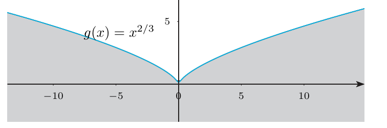
Poner $>0$ en una raíz: es el logaritmo el que pide $>0$.
Ejercicio 4.14 · dominio de $\sqrt{\ln(xy)}$ E pp.145-146
Sea $f(x,y)=\sqrt{\ln(xy)}$. ¿Cuál es su dominio?
- Qué me piden
- Hallar el dominio de $\sqrt{\ln(xy)}$.
- Cómo lo pienso
- Hay dos filtros encadenados: el logaritmo exige $xy>0$ y la raíz exige $\ln(xy)\ge0$, que es $xy\ge1$. Luego hay que dibujar esa región con cuidado con el signo.
- Qué uso
- Condiciones de dominio (U p.153): $\ln u$ pide $u>0$; $\sqrt u$ pide $u\ge0$; $\ln$ es creciente y $\ln1=0$.
- Por dónde empiezo
- Pasar $\ln(xy)\ge0$ a $xy\ge1$ y separar los casos $x>0$ y $x<0$.
- Logaritmo: $xy>0$ (mismo signo y ninguno nulo: cuadrantes I y III sin los ejes).
- Raíz: $\ln(xy)\ge0\iff xy\ge e^0=1$ (porque $\ln$ es creciente y $\ln1=0$). Esto ya implica $xy>0$.
- Caso $x>0$ (entonces $y>0$): dividir por $x>0$ no cambia el sentido: $y\ge\dfrac1x$ (por encima de la rama del primer cuadrante, incluida).
- Caso $x<0$ (entonces $y<0$): dividir por $x<0$ sí cambia el sentido: $y\le\dfrac1x$ (por debajo de la rama del tercer cuadrante, incluida).
- Dominio: $D=\{x>0,\ y\ge\tfrac1x\}\cup\{x<0,\ y\le\tfrac1x\}=\{(x,y):xy\ge1\}$.
- Comprobación: $(2,1)$: $2\ge1$ ✓. $(-1,-3)$: $3\ge1$ ✓. $(1,\tfrac12)$: $\tfrac12<1$ ✗ (su $\ln$ es negativo).
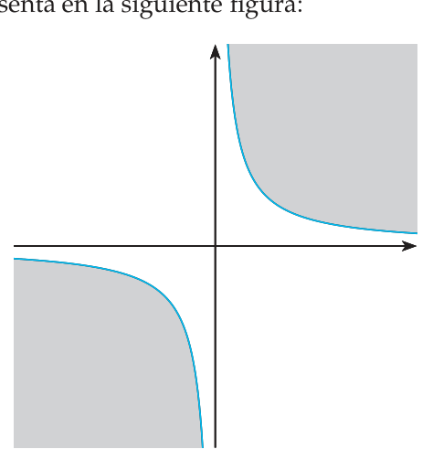
Dividir $xy\ge1$ entre $x$ sin mirar el signo y dar $y\ge1/x$ también en el tercer cuadrante (eso incluiría puntos como $(-1,0)$).
Ejercicio 4.15 · dominio e imagen de $\cos(xz+\ln y)$ E pp.146-147
Determina el dominio y la imagen de $f(x,y,z)=\cos(xz+\ln y)$.
- Qué me piden
- Determinar el dominio y la imagen de $\cos(xz+\ln y)$.
- Cómo lo pienso
- El coseno acepta cualquier número; solo el logaritmo pone condición. Y el coseno de algo que recorre todos los reales recorre todo $[-1,1]$. Para la imagen hay que probar dos cosas: que no se sale de $[-1,1]$ y que se alcanza todo.
- Qué uso
- Condiciones de dominio (U p.153); $-1\le\cos u\le1$; continuidad y valores intermedios.
- Por dónde empiezo
- Escribir la condición del logaritmo, $y>0$, y luego buscar una recta del dominio donde $f$ sea $\cos x$.
- Dominio: $\cos$ y $xz$ están definidos siempre; $\ln y$ exige $y>0$. $D=\{(x,y,z)\in\mathbb R^3:y>0\}$ (un semiespacio).
- Imagen, cota: $-1\le\cos u\le1$, luego $f(D)\subset[-1,1]$.
- Imagen, se alcanza todo: con puntos $(x,1,1)\in D$ queda $f(x,1,1)=\cos(x+0)=\cos x$, que, para $x\in[0,\pi]$, toma todos los valores entre $1$ y $-1$ (es continua: valores intermedios). Así $[-1,1]\subset f(D)$.
- Resultado: $D=\{y>0\}$, imagen $[-1,1]$.
Dar solo la mitad (i): saber que $|\cos|\le1$ no prueba que se alcancen todos los valores.
Ejercicio 4.16 · leer curvas de nivel: ¿crece, decrece o se mantiene? E pp.147-148
En la figura se representan 6 curvas de nivel $\{f=k\}$, $k=1,\dots,6$, de una función $f$. Estima si $f$ crece, decrece o se mantiene prácticamente sin cambios en: 1. punto $(0,2)$, dirección $\mathbf j=(0,1)$; 2. punto $(4,0)$, dirección $\mathbf j$; 3. punto $(4,-1)$, dirección $-\mathbf i$; 4. punto $(4,-1)$, dirección $\mathbf i-2\mathbf j$.
- Qué me piden
- Leer un mapa de curvas de nivel y decidir si $f$ crece, decrece o se mantiene en cuatro puntos y direcciones.
- Cómo lo pienso
- Como en un mapa topográfico: los niveles aumentan hacia fuera. Cruzar hacia una curva de etiqueta mayor es «subir», hacia una menor es «bajar», y avanzar a lo largo de una curva es no cambiar de altura.
- Qué uso
- Curvas de nivel (U p.155) y la figura del ejercicio.
- Por dónde empiezo
- Localizar en el dibujo cada punto y ver hacia qué etiquetas apunta cada dirección.
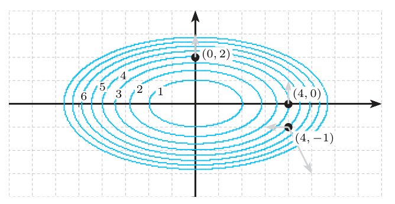
- Leer la figura. Las curvas son elipses aproximadamente centradas en $(0,0)$, con etiquetas $1,\dots,6$ crecientes hacia fuera. Según E (p.148), $(0,2)$ está sobre la curva $4$ y $(4,-1)$ sobre la $5$.
- $(0,2)$, dirección $(0,1)$: es el punto más alto de su elipse; al subir verticalmente se cruzan la $5$ y la $6$: crece.
- $(4,0)$, dirección $(0,1)$: está en el extremo derecho de una elipse, donde la tangente es vertical. Moverse en vertical es moverse tangente a la curva de nivel: prácticamente sin cambios (de primer orden).
- $(4,-1)$, dirección $-\mathbf i=(-1,0)$: estamos sobre la $5$ y hacia la izquierda se entra en la $4$: decrece.
- $(4,-1)$, dirección $\mathbf i-2\mathbf j=(1,-2)$: a la derecha y abajo se sale de la elipse hacia la $6$: crece.
Respuestas: crece, se mantiene, decrece, crece.
Leer la figura como si fuera la gráfica (confundir «estar más arriba en el dibujo» con «valor mayor de $f$»).
Ejercicio 4.17 · curvas de nivel de $x^2-\frac{y^2}3+8$ E pp.148-149
Sea $f(x,y)=x^2-\dfrac{y^2}3+8$. Determina las curvas de nivel. ¿Qué tipo de curvas son?
- Qué me piden
- Hallar y clasificar las curvas de nivel de $x^2-\frac{y^2}3+8$.
- Cómo lo pienso
- Igualar $f$ a una constante $C$ da $x^2-\frac{y^2}3=C-8$: según el signo de $C-8$ salen hipérbolas horizontales, verticales o, si es $0$, dos rectas.
- Qué uso
- Curva de nivel $\{f=C\}$ (U p.155) y reconocimiento de cónicas.
- Por dónde empiezo
- Poner $C'=C-8$ y discutir los casos $C'>0$, $C'<0$, $C'=0$.
- Ecuación: $x^2-\dfrac{y^2}3=C'$, con $C'=C-8$.
- $C'>0$ ($C>8$): dividiendo por $C'$, $\dfrac{x^2}{C'}-\dfrac{y^2}{3C'}=1$: hipérbola que corta al eje $x$ en $(\pm\sqrt{C'},0)$ y se abre a izquierda y derecha.
- $C'<0$ ($C<8$): $\dfrac{y^2}{3|C'|}-\dfrac{x^2}{|C'|}=1$: hipérbola que corta al eje $y$ en $(0,\pm\sqrt{3|C'|})$ y se abre arriba y abajo.
- $C'=0$ ($C=8$): $x^2=\dfrac{y^2}3\iff y=\pm\sqrt3\,x$: dos rectas que se cortan en el origen (las asíntotas de todas las hipérbolas). Contienen al punto $(0,0)$, donde $f=8$.
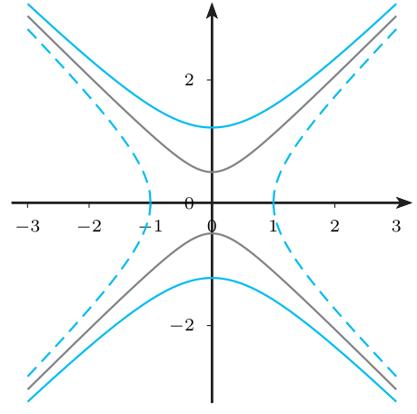
Olvidar el caso $C'=0$, o dividir por $C'$ sin haberlo excluido.
Ejercicio 4.18 · curvas de nivel de $x^2-y$ E p.149
Determina las curvas de nivel de $f(x,y)=x^2-y$. ¿Qué tipo de curvas son?
- Qué me piden
- Hallar y clasificar las curvas de nivel de $x^2-y$.
- Cómo lo pienso
- Igualar $f$ a una constante y despejar: aquí se despeja $y$ y sale una parábola para cada valor de la constante.
- Qué uso
- Curva de nivel $\{f=C\}$ (U p.155).
- Por dónde empiezo
- Escribir $x^2-y=C$ y despejar $y=x^2-C$.
- Curva de nivel $C$: $x^2-y=C$, $C\in\mathbb R$.
- Despejar: $y=x^2-C$: la parábola $y=x^2$ trasladada verticalmente (vértice $(0,-C)$).
- Todas son parábolas (no hay casos especiales). Imagen de $f$: $\mathbb R$ (por ejemplo $f(0,y)=-y$).
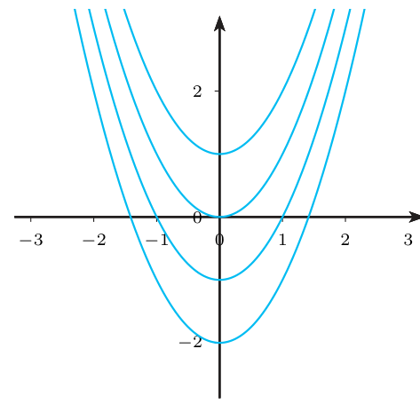
Dibujar la gráfica de $f$ (una superficie) en lugar de curvas en el plano $xy$.
Ejercicio 4.19 · $\displaystyle\lim_{(x,y)\to(0,0)}\frac{x^2+y^3}{x^2+y^2}$ no existe (reiterados) E pp.149-150 · X p.4
Estudia si existe $\displaystyle\lim_{(x,y)\to(0,0)}\frac{x^2+y^3}{x^2+y^2}$.
- Qué me piden
- Decidir si existe $\lim_{(x,y)\to(0,0)}\frac{x^2+y^3}{x^2+y^2}$.
- Cómo lo pienso
- Sustituir da $\frac00$. Si es que no existe, bastará encontrar dos recorridos con resultados distintos; los límites reiterados son los más cómodos.
- Qué uso
- Límites reiterados y condición necesaria (U p.161): si el límite existe, los reiterados coinciden con él.
- Por dónde empiezo
- Calcular el reiterado «primero $y\to0$» con $x\ne0$ fijo.
- Sustituir: $\tfrac00$, indeterminado. Hay que estudiar caminos.
- Reiterado «primero $y$»: con $x\ne0$ fijo, $\lim_{y\to0}\dfrac{x^2+y^3}{x^2+y^2}=\dfrac{x^2}{x^2}=1$; luego $\lim_{x\to0}1=1$.
- Reiterado «primero $x$»: con $y\ne0$ fijo, $\lim_{x\to0}\dfrac{x^2+y^3}{x^2+y^2}=\dfrac{y^3}{y^2}=y$; luego $\lim_{y\to0}y=0$.
- Conclusión: $1\ne0$; por la condición necesaria (U p.161) el límite no existe.
- Alternativa con rectas (si los reiterados coincidieran): $y=mx$ da $\dfrac{1+m^3x}{1+m^2}\to\dfrac1{1+m^2}$, que depende de $m$.
Es exactamente la pregunta X p.4 (feb. 2010).
Sustituir $x=0$ e $y=0$ a la vez en el paso interior (otra vez $\tfrac00$): en el límite interior la otra variable es una constante no nula.
Ejercicio 4.20 · los reiterados iguales no bastan E p.150 · P
Razona si es cierto que cualquier $f:D\subset\mathbb R^2\to\mathbb R$ tiene límite en $(x_0,y_0)$ si los reiterados existen y coinciden: $\lim_{y\to y_0}\big(\lim_{x\to x_0}f\big)=\lim_{x\to x_0}\big(\lim_{y\to y_0}f\big)$.
- Qué me piden
- Razonar si es cierto que, si los reiterados existen y coinciden, la función tiene límite.
- Cómo lo pienso
- Los reiterados son, en el fondo, acercarse «por los ejes»; otros caminos pueden dar otro valor. Un «es cierto» exigiría una demostración; un «es falso» solo pide un contraejemplo.
- Qué uso
- Condición necesaria, no suficiente (U p.161).
- Por dónde empiezo
- Proponer $\frac{xy}{x^2+y^2}$ en $(0,0)$ y calcular sus dos reiterados.
- Qué dice la teoría (U p.161): si el límite existe, los reiterados (si existen) coinciden con él. Es una condición necesaria, no suficiente.
- Contraejemplo: $f(x,y)=\dfrac{xy}{x^2+y^2}$ en $(0,0)$. Reiterado 1: con $y\ne0$ fijo, $\lim_{x\to0}\frac{xy}{x^2+y^2}=0$; luego $0$. Reiterado 2: por simetría, $0$. Camino $y=x$: $f(x,x)=\frac{x^2}{2x^2}=\frac12\to\frac12\ne0$.
- Dos caminos con límites distintos: no existe el límite aunque los reiterados coinciden.
Respuesta: falso.
Creer que, porque los reiterados (o todas las rectas) dan lo mismo, el límite existe.
Ejercicio 4.21 · dominio y continuidad de tres funciones E pp.150-151
Para $f(x,y)=y\operatorname{sen}(x^2+1)$, $g(x,y)=\dfrac{\ln(3+x^2y^2)}{3+x^2+y^4}$, $h(x,y)=\sqrt{x^2y}$, determina su dominio y estudia cuáles son continuas.
- Qué me piden
- Hallar el dominio de $f$, $g$, $h$ y decir cuáles son continuas.
- Cómo lo pienso
- Las tres están hechas con operaciones y composiciones de funciones elementales: son continuas en todo su dominio. El trabajo real es hallar el dominio.
- Qué uso
- Dominio (U p.153); suma, producto, cociente (den. $\ne0$) y composición de continuas son continuas (U pp.166-167).
- Por dónde empiezo
- Empezar por $f$ y $g$ (dominio $\mathbb R^2$) y dejar $h$ para el final, que tiene raíz.
- $f$: $y$, $x^2+1$ y $\operatorname{sen}$ están definidos siempre: dominio $\mathbb R^2$. Composición y producto de continuas: continua en $\mathbb R^2$.
- $g$, dominio: $3+x^2y^2\ge3>0$ (el logaritmo existe) y $3+x^2+y^4\ge3>0$ (el denominador no se anula): dominio $\mathbb R^2$. Cociente de continuas con denominador $\ne0$: continua en $\mathbb R^2$.
- $h$, dominio: raíz $\Rightarrow x^2y\ge0$. Como $x^2\ge0$: si $x\ne0$, la condición es $y\ge0$; si $x=0$, $x^2y=0\ge0$ para cualquier $y$. Así $D_h=\{y\ge0\}\cup\{(0,y):y\in\mathbb R\}$: el semiplano superior más el eje $y$ entero. Por ejemplo $(0,-5)\in D_h$ y $h(0,-5)=0$.
- $h$, continuidad: composición de un polinomio con $\sqrt{\cdot}$, continua en $[0,\infty)$: continua en todo $D_h$. (En los puntos $(0,y)$, $y<0$, los únicos puntos del dominio cercanos están en el eje $y$, donde $h=0$; la Def. 4.4 solo mira puntos del dominio.)
«Simplificar» $x^2y\ge0$ a $y\ge0$ dividiendo por $x^2$ sin considerar $x=0$.
Ejercicio 4.22 · continuidad de $(x^2+y^2)\operatorname{sen}\frac1{x^2+y^2}$ E pp.151-152
Sea $f(x,y)=(x^2+y^2)\operatorname{sen}\dfrac1{x^2+y^2}$ si $(x,y)\ne(0,0)$, $f(0,0)=0$. Estudia su continuidad.
- Qué me piden
- Estudiar la continuidad de $f=(x^2+y^2)\operatorname{sen}\frac1{x^2+y^2}$, con $f(0,0)=0$.
- Cómo lo pienso
- Fuera del origen no hay problema. En el origen, «algo que tiende a $0$» ($x^2+y^2$) por «algo acotado» (el seno) tiende a $0$, justo $f(0,0)$.
- Qué uso
- Polares y cotas (U p.165); continuidad (Def. 4.5, p.166).
- Por dónde empiezo
- Comprobar la continuidad fuera del origen y pasar a polares para el límite en $(0,0)$.
- Fuera del origen: composición, cociente (denominador $\ne0$) y producto de continuas. Continua en $\mathbb R^2\setminus\{(0,0)\}$.
- En el origen hay que ver si $\lim_{(x,y)\to(0,0)}f=0=f(0,0)$. Sustituir da «$0\cdot\operatorname{sen}(\infty)$», sin sentido: hay que acotar.
- Polares (U p.165): $x^2+y^2=\rho^2$, así que $F(\rho,\theta)=\rho^2\operatorname{sen}\dfrac1{\rho^2}$ (ni siquiera depende de $\theta$).
- Acotar: $|F-0|=\rho^2\left|\operatorname{sen}\dfrac1{\rho^2}\right|\le\rho^2=:h(\rho)\to0$. Por el caso 2 de U p.165, $\lim_{(x,y)\to(0,0)}f=0$.
- Sin polares: $\lim_{(x,y)\to(0,0)}(x^2+y^2)=0$ y el seno está acotado por $1$; «infinitésimo por acotada» (U p.165).
- Conclusión: el límite vale $0=f(0,0)$: $f$ es continua en todo $\mathbb R^2$.
Intentar calcular el límite de $\operatorname{sen}\frac1{x^2+y^2}$ (no existe) y concluir que el producto tampoco lo tiene.
Ejercicio 4.23 · $\dfrac{y^2}x$ no es continua en el origen E p.152
Sea $f(x,y)=\dfrac{y^2}x$ si $x\ne0$, $f(x,y)=0$ si $x=0$. Estudia su continuidad en el origen.
- Qué me piden
- Estudiar la continuidad de $\frac{y^2}x$ (con $f=0$ si $x=0$) en el origen.
- Cómo lo pienso
- Sospecho que falla: si pruebo rectas darán $0$, pero hay una curva que iguala los «tamaños» de $y^2$ y $x$ y debería dar otro valor.
- Qué uso
- Continuidad (Def. 4.5, p.166); límite por curvas (U pp.162-163).
- Por dónde empiezo
- Probar las rectas $y=mx$ y después la parábola $x=y^2$.
- Qué hay que ver: continua en $(0,0)\iff \lim_{(x,y)\to(0,0)}f=f(0,0)=0$.
- Rectas $y=mx$: $f(x,mx)=\dfrac{m^2x^2}x=m^2x\to0$ para todo $m$. Eje $y$ ($x=0$): $f(0,y)=0\to0$.
- Todas las rectas dan $0$, pero eso no prueba nada. Busquemos una curva que haga $y^2$ y $x$ «del mismo tamaño»: $x=y^2$. Entonces $f(y^2,y)=\dfrac{y^2}{y^2}=1\to1$.
- Conclusión: por $x=y^2$ el límite es $1\ne0=f(0,0)$: $f$ no es continua en $(0,0)$ (y el límite ni existe).
- Más aún: por $x=y^2/k$ ($k\ne0$) sale $f=k$: acercándose por parábolas se consigue cualquier valor.
Quedarse en las rectas y afirmar «límite $0$, continua».
Ejercicio 4.24 · $\dfrac{x^2-y^2}{x^2+y^2}$ no es continua en el origen E p.153
Sea $f(x,y)=\dfrac{x^2-y^2}{x^2+y^2}$ si $(x,y)\ne(0,0)$, $f(0,0)=0$. ¿Es continua?
- Qué me piden
- Decidir si $\frac{x^2-y^2}{x^2+y^2}$, con $f(0,0)=0$, es continua.
- Cómo lo pienso
- Fuera del origen no hay problema (cociente de polinomios); en el origen los dos ejes dan valores distintos.
- Qué uso
- Continuidad de cocientes (U p.166); no existencia del límite por caminos (U Ejemplo 4.21, p.167).
- Por dónde empiezo
- Probar el eje $y$ y el eje $x$.
- En $(x,y)\ne(0,0)$: cociente de polinomios con denominador $x^2+y^2\ne0$: continua (U p.166).
- Eje $y$ ($x=0$, $y\ne0$): $f(0,y)=\dfrac{-y^2}{y^2}=-1\to-1$.
- Eje $x$ ($y=0$, $x\ne0$): $f(x,0)=\dfrac{x^2}{x^2}=1\to1$.
- Conclusión: dos caminos con límites distintos: no existe $\lim_{(x,y)\to(0,0)}f$, luego $f$ no es continua en $(0,0)$. Es continua en $\mathbb R^2\setminus\{(0,0)\}$.
- En polares: $F=\cos^2\theta-\operatorname{sen}^2\theta=\cos2\theta$ depende de $\theta$ (caso 1 de U p.165).
Concluir «discontinua» sin decir en qué puntos: la respuesta completa es «continua en $\mathbb R^2\setminus\{(0,0)\}$, discontinua en $(0,0)$».
6Ejemplos propios (de fácil a difícil) P
Propio 1 · dominio con raíz y logaritmo (y una variante con cociente) P
Halla y dibuja el dominio de $f(x,y)=\sqrt{y-x^2}+\ln(4-x^2-y^2)$. Variante: ¿qué cambia si es $g(x,y)=\dfrac{\sqrt{y-x^2}}{\ln(4-x^2-y^2)}$?
- Qué me piden
- Hallar y dibujar el dominio de $\sqrt{y-x^2}+\ln(4-x^2-y^2)$ y ver qué cambia si el logaritmo divide.
- Cómo lo pienso
- Cada pieza impone una condición y el dominio es la intersección; si el logaritmo está en un denominador, además no puede valer $0$.
- Qué uso
- Condiciones de dominio (U p.153): raíz $\ge0$, logaritmo $>0$, denominador $\ne0$.
- Por dónde empiezo
- Escribir las dos condiciones por separado.
- Raíz: $y-x^2\ge0\iff y\ge x^2$: sobre o por encima de la parábola (con la parábola).
- Logaritmo: $4-x^2-y^2>0\iff x^2+y^2<4$: disco abierto de radio $2$ (sin la circunferencia).
- Dominio de $f$: $\{y\ge x^2,\ x^2+y^2<4\}$: una «gota» limitada abajo por la parábola (incluida) y arriba por la circunferencia (excluida). Se cortan en $y+y^2=4$, $y=\frac{-1+\sqrt{17}}2\approx1{,}56$, $x\approx\pm1{,}25$; esos dos puntos no están en $D_f$.
- Comprobación: $(0,1)$ ✓; $(1{,}5;\,1{,}5)$: $1{,}5-2{,}25<0$ ✗; $(0,2)$: $\ln0$ ✗.
- Variante $g$: además $\ln(4-x^2-y^2)\ne0\iff x^2+y^2\ne3$: hay que quitar el arco de la circunferencia de radio $\sqrt3$ que queda dentro de la región (por ejemplo, el punto $(0,\sqrt3)$).
Olvidar la condición «denominador $\ne0$» cuando el denominador es un logaritmo ($\ln u=0$ para $u=1$).
Propio 2 · curvas de nivel de $x^2+4y^2$ y de $xy$ P
Describe las curvas de nivel de (a) $f(x,y)=x^2+4y^2$ y (b) $g(x,y)=xy$, e indica la imagen de cada función.
- Qué me piden
- Describir las curvas de nivel de $x^2+4y^2$ y de $xy$, y sus imágenes.
- Cómo lo pienso
- (a) son elipses que se reducen a un punto en $k=0$; (b) son hipérbolas que degeneran en los ejes en $k=0$.
- Qué uso
- Curva de nivel (U p.155 y Ejemplo 4.11, pp.155-156).
- Por dónde empiezo
- Escribir $f=k$ y discutir el signo de $k$.
- (a) Nivel $k$: $x^2+4y^2=k$. Si $k<0$: vacía. Si $k=0$: solo $(0,0)$. Si $k>0$: $\dfrac{x^2}k+\dfrac{y^2}{k/4}=1$, elipse de semiejes $\sqrt k$ (en $x$) y $\frac{\sqrt k}2$ (en $y$); por ejemplo, $k=4$ pasa por $(\pm2,0)$ y $(0,\pm1)$. Imagen: $[0,\infty)$.
- (b) Nivel $k$: $xy=k$. Si $k\ne0$: $y=k/x$, hipérbola (cuadrantes I y III si $k>0$; II y IV si $k<0$). Si $k=0$: $x=0$ o $y=0$, los dos ejes. Imagen: $\mathbb R$ ($g(x,1)=x$).
- Lectura: en (a), como en E 4.16, las elipses crecen hacia fuera. En (b) el signo de $g$ cambia al cruzar los ejes (silla de montar).
Dar «circunferencias» en (a): el $4$ delante de $y^2$ achata la curva en elipse.
Propio 3 · límite que no existe aunque fallen las rectas y engañen las polares P
Estudia $\displaystyle\lim_{(x,y)\to(0,0)}\frac{xy^2}{x^2+y^4}$.
- Qué me piden
- Estudiar $\lim_{(x,y)\to(0,0)}\frac{xy^2}{x^2+y^4}$.
- Cómo lo pienso
- Rectas y reiterados dan $0$, pero la parábola $x=y^2$ da $\frac12$; y las polares, aplicadas a la ligera, harían creer que el límite es $0$.
- Qué uso
- Reiterados, rectas y curvas (U pp.161-163); polares, caso 3 (U p.165).
- Por dónde empiezo
- Calcular los reiterados y las rectas, y luego buscar una curva que iguale grados.
- Sustituir: $\tfrac00$.
- Reiterados: con $y\ne0$ fijo, $\lim_{x\to0}\frac{xy^2}{x^2+y^4}=\frac0{y^4}=0$; con $x\ne0$ fijo, $\lim_{y\to0}=\frac0{x^2}=0$. Ambos $0$.
- Rectas $y=mx$: $\dfrac{m^2x^3}{x^2+m^4x^4}=\dfrac{m^2x}{1+m^4x^2}\to0$. Todas $0$; aún no se sabe nada.
- Curva que iguala grados: en el denominador compiten $x^2$ e $y^4$; con $x=y^2$ valen lo mismo: $f(y^2,y)=\dfrac{y^4}{y^4+y^4}=\dfrac12$. Con $x=-y^2$ sale $-\frac12$.
- Conclusión: $\frac12\ne0$: no existe.
- Trampa de las polares: $F(\rho,\theta)=\dfrac{\rho\cos\theta\operatorname{sen}^2\theta}{\cos^2\theta+\rho^2\operatorname{sen}^4\theta}$. Para cada $\theta$ fijo con $\cos\theta\ne0$, $F\to0$ (el denominador tiende a $\cos^2\theta\ne0$); si $\cos\theta=0$, $F=0$. ¡Todos los rayos dan $0$! Pero no hay cota $|F|\le h(\rho)$ sin $\theta$: cuando $\cos\theta$ es muy pequeño, el denominador también. Es el caso 3 de U p.165 (no se concluye).
«$\lim_{\rho\to0}F=0$ para todo $\theta$, luego el límite es $0$»: eso equivale a probar solo las rectas.
Propio 4 · límite en un punto distinto del origen: polares trasladadas P
Sea $f(x,y)=\dfrac{(x-1)\,y^2}{(x-1)^2+y^2}$ si $(x,y)\ne(1,0)$, $f(1,0)=c$. ¿Para qué valor de $c$ es $f$ continua en $\mathbb R^2$?
- Qué me piden
- Hallar $c$ para que $f=\frac{(x-1)y^2}{(x-1)^2+y^2}$, $f(1,0)=c$, sea continua en $\mathbb R^2$.
- Cómo lo pienso
- El punto es $(1,0)$, no el origen: se centra todo allí. El cociente $\frac{y^2}{(x-1)^2+y^2}$ queda entre $0$ y $1$ y el factor $(x-1)$ tiende a $0$.
- Qué uso
- Polares centradas en $(a,b)$ (U p.165); continuidad (Def. 4.5, p.166).
- Por dónde empiezo
- Probar caminos para intuir el candidato al límite y luego demostrarlo.
- Fuera de $(1,0)$: cociente de polinomios con denominador $(x-1)^2+y^2\ne0$: continua.
- Caminos (para intuir): recta $x=1$: $f=0$; rectas $y=m(x-1)$: $\dfrac{m^2(x-1)}{1+m^2}\to0$. Candidato $l=0$.
- Probarlo con polares centradas en $(1,0)$: $x=1+\rho\cos\theta$, $y=\rho\operatorname{sen}\theta$. El denominador es $\rho^2$ y el numerador $\rho^3\cos\theta\operatorname{sen}^2\theta$: $F=\rho\cos\theta\operatorname{sen}^2\theta$ y $|F-0|\le\rho\to0$ (cota sin $\theta$). Límite $0$.
- Alternativa (emparedado): $\dfrac{y^2}{(x-1)^2+y^2}\le1$, luego $|f|\le|x-1|\to0$.
- Continuidad en $(1,0)$: $\lim_{(x,y)\to(1,0)}f=0$, así que es continua $\iff c=0$. Respuesta: $c=0$. Para otro $c$, $f$ es discontinua en $(1,0)$ y continua en el resto.
Usar $x=\rho\cos\theta$, $y=\rho\operatorname{sen}\theta$ (centradas en el origen) para un límite en $(1,0)$: eso mide la cercanía a $(0,0)$.
Propio 5 · continuidad con denominador $x^2+2y^2$ (polares) P
Sea $f(x,y)=\dfrac{x^3}{x^2+2y^2}$ si $(x,y)\ne(0,0)$, $f(0,0)=0$. Estudia su continuidad.
- Qué me piden
- Estudiar la continuidad de $\frac{x^3}{x^2+2y^2}$ con $f(0,0)=0$.
- Cómo lo pienso
- En polares el denominador es $\rho^2$ por algo que nunca baja de $1$; el numerador aporta $\rho^3$ y sobra un $\rho$ que tiende a $0$.
- Qué uso
- Polares y cota sin $\theta$ (U p.165); continuidad (Def. 4.5, p.166).
- Por dónde empiezo
- Comprobar la continuidad fuera del origen y pasar a polares.
- Fuera del origen: cociente de polinomios con denominador $\ne0$: continua.
- Polares: $x^2+2y^2=\rho^2(\cos^2\theta+2\operatorname{sen}^2\theta)=\rho^2(1+\operatorname{sen}^2\theta)$, porque $\cos^2\theta+\operatorname{sen}^2\theta=1$. Así $F(\rho,\theta)=\dfrac{\rho\cos^3\theta}{1+\operatorname{sen}^2\theta}$.
- Acotar sin $\theta$: el denominador es $\ge1$ y $|\cos\theta|\le1$, luego $|F-0|\le\rho=:h(\rho)\to0$. El límite es $0=f(0,0)$: continua en $\mathbb R^2$.
Mismo truco en las variantes de examen: $\dfrac{x^2y^2}{x^2+2y^2}$ da $F=\dfrac{\rho^2\cos^2\theta\operatorname{sen}^2\theta}{1+\operatorname{sen}^2\theta}$, con $|F|\le\rho^2$ (X pp.61-63, feb. 2016, Modelo A); e $y^3\operatorname{sen}\frac1{x^2+2y^2}$ da $|F|\le\rho^3$ (X pp.71-72, sept. 2016, Modelo A; «infinitésimo por acotada»). X pp.90-92 (feb. 2018, Modelo A) usa justo $\frac{x^3}{x^2+2y^2}$, pero en esa pregunta lo que se pide son derivadas parciales y diferenciabilidad (§4.3 y Tema 5); la parte de §4.2 es la continuidad de las parciales por reiterados y rectas.
Olvidar justificar que $\cos^2\theta+2\operatorname{sen}^2\theta$ no se anula (es $\ge1$); sin eso no hay cota.
7Así lo preguntan en el examen X
Las preguntas de este tema se reducen a cuatro: dominio (a veces con imagen), curvas de nivel, «estudie si existe el límite» (casi siempre en el origen, y casi siempre la respuesta es «no existe» con dos caminos, o «vale 0» con polares) y continuidad de una función a trozos. Aquí van siete problemas de menor a mayor dificultad, con el estilo de resolución que se espera. Son del mismo tipo, además: X p.4 (= E 4.19), X p.143 (dominio de $\ln(36-x^2-y^2)$, un disco abierto de radio 6), X pp.130-131 (continuidad de $\frac{x^2}{x^2+y^2}$, = Ej. 4.21 de U), X p.39 (continuidad de $x^2\operatorname{sen}\frac1{x^2+y^2}$, igual que E 4.22 con la cota $|f|\le x^2$) y X p.16 (V/F «si existen y coinciden los límites por todos los caminos, ¿es continua?»: falso, falta comparar con $f(a,b)$; contraejemplo $x^2+y$ si $(x,y)\ne(0,0)$, $f(0,0)=1$). Existe además un tipo de pregunta con denominador $x^2+2y^2$ y continuidad por polares (X pp.61-63, 71-72 y 90-92; ver Propio 5), cuyos otros apartados (parciales, diferenciabilidad) son de §4.3 y Tema 5. Este tema no cubre derivadas parciales ni diferenciabilidad (§4.3 y Tema 5), que aparecen en los otros apartados de algunos de estos exámenes.
X1 · dominio de una suma: la corona $1\le x^2+y^2<4$ X p.148 (feb. 2019)
Sean $f(x,y)=\ln(4-x^2-y^2)$ y $g(x,y)=\sqrt{x^2+y^2-1}$. Calcule el dominio de $h(x,y)=f(x,y)+g(x,y)$.
- Qué me piden
- Calcular el dominio de la suma $\ln(4-x^2-y^2)+\sqrt{x^2+y^2-1}$.
- Cómo lo pienso
- La suma existe donde existen las dos: dentro del círculo de radio 2 (sin el borde) y fuera del de radio 1 (con el borde).
- Qué uso
- Dominio de una suma = intersección de dominios (U p.153); $x^2+y^2$ es el cuadrado de la distancia al origen.
- Por dónde empiezo
- Hallar el dominio de $f$ y el de $g$ por separado.
- Dominio de $f$: logaritmo $\Rightarrow4-x^2-y^2>0\iff x^2+y^2<4$: disco abierto de centro $(0,0)$ y radio $2$.
- Dominio de $g$: raíz $\Rightarrow x^2+y^2\ge1$: puntos a distancia $\ge1$ del origen (el exterior del disco de radio 1, con su circunferencia).
- Dominio de $h$: la intersección, $D=\{1\le x^2+y^2<4\}$: una corona circular que incluye la circunferencia de radio 1 y no incluye la de radio 2.
- Comprobación: $(1,0)$: $h=\ln3+0$ ✓. $(2,0)$: $\ln0$ ✗. $(0,\tfrac32)$: $\ln(1{,}75)+\sqrt{1{,}25}$ ✓.
«$f$ definida $\iff x^2+y^2<4$; $g$ definida $\iff x^2+y^2\ge1$. $\operatorname{dom}h=\{(x,y):1\le x^2+y^2<4\}$ (corona; incluye el borde interior, no el exterior).»
Poner $\le4$ (el logaritmo de $0$ no existe) o $>1$ (la raíz de $0$ sí existe).
X2 · dominio e imagen de $x\ln y+y\ln x$ X p.140 (feb. 2018)
Determinar el dominio y la imagen de $f(x,y)=x\ln y+y\ln x$.
- Qué me piden
- Determinar el dominio y la imagen de $x\ln y+y\ln x$.
- Cómo lo pienso
- Cada logaritmo pide su variable positiva. Para la imagen basta una recta del dominio en la que $f$ se reduzca al propio $\ln x$, que recorre todo $\mathbb R$.
- Qué uso
- Dominio (U p.153); imagen $f(D)$ del mismo apartado.
- Por dónde empiezo
- Escribir las condiciones $x>0$, $y>0$.
- Dominio: $\ln y$ exige $y>0$ y $\ln x$ exige $x>0$: $D=\{x>0,\ y>0\}$ (primer cuadrante abierto, sin ejes).
- Imagen: tomemos los puntos $(x,1)$ con $x>0$, que están en $D$. Ahí $f(x,1)=x\ln1+1\cdot\ln x=\ln x$. Cuando $x$ recorre $(0,\infty)$, $\ln x$ recorre todo $\mathbb R$ (por ejemplo, $f(e^c,1)=c$ para cualquier $c$). La imagen es $\mathbb R$.
«$\operatorname{dom}f=\{x>0,y>0\}$. Imagen: $f(x,1)=\ln x$ y $x\in(0,\infty)$ recorre todo $\mathbb R$; luego $f(D)=\mathbb R$.»
Dar el dominio con $\ge$ (los ejes no entran: $\ln0$ no existe).
X3 · curvas de nivel de $2x^2+2y^2-4$ X p.137 (feb. 2017)
Sea $f:\mathbb R^2\to\mathbb R$ dada por $f(x,y)=2x^2+2y^2-4$. Dibuje sus curvas de nivel.
- Qué me piden
- Dibujar las curvas de nivel de $2x^2+2y^2-4$.
- Cómo lo pienso
- $f=C$ es $x^2+y^2=\frac{C+4}2$: circunferencias centradas en el origen, salvo cuando el segundo miembro es $0$ (un punto) o negativo (nada).
- Qué uso
- Curva de nivel (U p.155 y Ejemplo 4.11, pp.155-156).
- Por dónde empiezo
- Igualar $f=C$ y despejar $x^2+y^2$.
- Curva de nivel $C$: $2x^2+2y^2-4=C\iff x^2+y^2=\dfrac{C+4}2$.
- $C>-4$: circunferencia de centro $(0,0)$ y radio $\sqrt{\frac{C+4}2}$. Por ejemplo $C=-2$: radio $1$; $C=4$: radio $2$; $C=14$: radio $3$.
- $C=-4$: $x^2+y^2=0$, el punto $(0,0)$ (el mínimo de $f$).
- $C<-4$: $x^2+y^2<0$ es imposible: vacía.
- Dibujo: circunferencias concéntricas; los radios crecen como $\sqrt{C+4}$, así que a igual salto de $C$ las curvas se van juntando (la gráfica, un paraboloide, se hace más empinada). Imagen de $f$: $[-4,\infty)$.
«$f=C\iff x^2+y^2=\frac{C+4}2$. Si $C>-4$: circunferencia de radio $\sqrt{(C+4)/2}$. Si $C=-4$: el punto $(0,0)$. Si $C<-4$: vacía.» (Y un dibujo con tres o cuatro circunferencias.)
Escribir «radio $C$» o «radio $C+4$» en lugar de $\sqrt{(C+4)/2}$.
X4 · $\displaystyle\lim_{(x,y)\to(0,0)}\frac{x^2-y^2}{x^2+y^2}$ no existe (por los ejes) X p.33 (feb. 2013)
Estúdiese si existe el límite $\displaystyle\lim_{(x,y)\to(0,0)}\frac{x^2-y^2}{x^2+y^2}$.
- Qué me piden
- Estudiar si existe $\lim_{(x,y)\to(0,0)}\frac{x^2-y^2}{x^2+y^2}$.
- Cómo lo pienso
- Por el eje $x$ vale siempre $1$ y por el eje $y$ vale siempre $-1$: no puede tener límite.
- Qué uso
- Condición necesaria por caminos (U p.161).
- Por dónde empiezo
- Sustituir (sale $\frac00$) y probar el eje $y$ y el eje $x$.
- Sustituir: $\tfrac00$.
- Eje $y$ ($x=0$, $y\ne0$): $f(0,y)=\dfrac{-y^2}{y^2}=-1\to-1$.
- Eje $x$ ($y=0$, $x\ne0$): $f(x,0)=\dfrac{x^2}{x^2}=1\to1$.
- No existe: dos caminos, dos valores (U p.161).
Es la misma función que E 4.24.
«Por $x=0$: $f(0,y)=-1\to-1$. Por $y=0$: $f(x,0)=1\to1$. Los límites por dos caminos son distintos, luego el límite no existe.»
Calcular un solo eje y concluir.
X5 · continuidad de $\operatorname{arctg}\frac{xy}{x^2+y^2}$ (a trozos) X pp.45 y 98
Sea $f(x,y)=\operatorname{arctg}\dfrac{xy}{x^2+y^2}$ si $(x,y)\ne(0,0)$, $f(0,0)=0$. Estudiar la continuidad de $f$ en $\mathbb R^2$.
- Qué me piden
- Estudiar la continuidad de $\operatorname{arctg}\frac{xy}{x^2+y^2}$ con $f(0,0)=0$ en $\mathbb R^2$.
- Cómo lo pienso
- Por la recta $y=mx$ el cociente vale una constante que cambia con $m$; el arcotangente, al ser creciente, no lo arregla.
- Qué uso
- Continuidad de composiciones y cocientes (U p.166); límite por rectas (U p.161).
- Por dónde empiezo
- Dar la continuidad fuera del origen y probar las rectas $y=mx$ en el origen.
- Fuera del origen: $\frac{xy}{x^2+y^2}$ es un cociente de polinomios con denominador $\ne0$ y $\operatorname{arctg}$ es continua en $\mathbb R$: composición continua. Continua en $\mathbb R^2\setminus\{(0,0)\}$.
- Origen, rectas $y=mx$ ($x\ne0$): $\dfrac{x\cdot mx}{x^2+m^2x^2}=\dfrac m{1+m^2}$ (constante). Luego $f(x,mx)=\operatorname{arctg}\dfrac m{1+m^2}$ para todo $x\ne0$ y su límite es ese mismo número.
- Depende de $m$: $m=0$ da $\operatorname{arctg}0=0$; $m=1$ da $\operatorname{arctg}\frac12\approx0{,}4636$. Distintos (el arcotangente es estrictamente creciente).
- Conclusión: no existe $\lim_{(x,y)\to(0,0)}f$, luego $f$ no es continua en $(0,0)$ y es continua en $\mathbb R^2\setminus\{(0,0)\}$.
- En polares: $F=\operatorname{arctg}\dfrac{\operatorname{sen}2\theta}2$ depende de $\theta$ (caso 1).
«Fuera del origen, $f$ es continua por ser composición y cociente de continuas. En el origen, por $y=mx$: $f(x,mx)=\operatorname{arctg}\frac m{1+m^2}$, que depende de $m$; el límite no existe y $f$ es discontinua en $(0,0)$.»
Creer que, como $\operatorname{arctg}$ está acotada, el límite es $0$: acotada sí, pero no multiplicada por nada que tienda a $0$.
X6 · $\displaystyle\lim_{(x,y)\to(0,0)}\frac{x^3+y^4}{x^2+y^2}=0$ (polares) X p.65 (feb. 2016)
Calcule el límite $\displaystyle\lim_{(x,y)\to(0,0)}\frac{x^3+y^4}{x^2+y^2}$.
- Qué me piden
- Calcular $\lim_{(x,y)\to(0,0)}\frac{x^3+y^4}{x^2+y^2}$.
- Cómo lo pienso
- Los caminos dan $0$, así que es de esperar que valga $0$, pero hay que probarlo. En polares el denominador es $\rho^2$ y el numerador tiene al menos $\rho^3$: sobra un $\rho$.
- Qué uso
- Polares, caso 2 (U p.165): $|F-l|\le h(\rho)\to0$ con $h$ sin $\theta$.
- Por dónde empiezo
- Pasar a polares y simplificar el $\rho^2$.
- Sustituir: $\tfrac00$. Los caminos (eje $x$: $f=x\to0$; eje $y$: $f=y^2\to0$; rectas: $\to0$) sugieren $l=0$. Hay que probarlo.
- Polares (U p.165): $x^2+y^2=\rho^2$ y $F(\rho,\theta)=\dfrac{\rho^3\cos^3\theta+\rho^4\operatorname{sen}^4\theta}{\rho^2}=\rho\cos^3\theta+\rho^2\operatorname{sen}^4\theta$.
- Acotar sin $\theta$: como $|\cos\theta|\le1$ y $|\operatorname{sen}\theta|\le1$, $|F-0|\le\rho+\rho^2=:h(\rho)\to0$.
- Conclusión (caso 2 de U p.165): el límite vale $0$.
«$x=\rho\cos\theta,\ y=\rho\operatorname{sen}\theta$: $F=\rho\cos^3\theta+\rho^2\operatorname{sen}^4\theta$. $|F|\le\rho+\rho^2\to0$ cuando $\rho\to0$ (cota independiente de $\theta$). Por tanto $\lim_{(x,y)\to(0,0)}f=0$.»
Escribir «$\lim_{\rho\to0}\rho\cos^3\theta=0$» para un $\theta$ fijo y darlo por probado sin la cota uniforme (ver Propio 3: puede fallar).
X7 · continuidad de $\frac{x^2y^3}{x^4+y^2}$ con $f(0,0)=1$ X p.138 (feb. 2017)
Sea $f(x,y)=\dfrac{x^2y^3}{x^4+y^2}$ si $(x,y)\ne(0,0)$ y $f(0,0)=1$. Estudiar la continuidad de $f$ en $(0,0)$.
- Qué me piden
- Estudiar la continuidad en $(0,0)$ de $\frac{x^2y^3}{x^4+y^2}$ con $f(0,0)=1$.
- Cómo lo pienso
- Cerca del origen $f$ se acerca a $0$ por cualquier camino, pero vale $1$ en el origen: hay un salto de valor. Para refutar la continuidad basta un camino que no dé $1$.
- Qué uso
- Continuidad (Def. 4.5, p.166): límite $=f(a,b)$.
- Por dónde empiezo
- Probar las rectas $y=mx$ y comparar con $f(0,0)=1$.
- Lo que hay que comparar: continua en $(0,0)\iff \lim_{(x,y)\to(0,0)}f=f(0,0)=1$.
- Rectas $y=mx$: $f(x,mx)=\dfrac{m^3x^5}{x^4+m^2x^2}=\dfrac{m^3x^3}{x^2+m^2}\to0$ (para $m\ne0$ el denominador tiende a $m^2\ne0$; para $m=0$, $f=0$). Eje $y$: $f(0,y)=0$.
- Basta para la discontinuidad. Si el límite existiera, valdría lo mismo que por las rectas, $0$, y $0\ne1$. Si no existiera, tampoco habría continuidad. En los dos casos $f$ no es continua en $(0,0)$.
- Extra (no necesario): el límite sí existe y vale $0$. Como $\frac{y^2}{x^4+y^2}\le1$, $|f|=x^2|y|\cdot\frac{y^2}{x^4+y^2}\le x^2|y|\to0$ (emparedado). Con $f(0,0)=0$ sería continua.
«Por $y=mx$: $f(x,mx)=\frac{m^3x^3}{x^2+m^2}\to0\ne1=f(0,0)$. Si el límite existiera valdría $0$, distinto de $f(0,0)$; luego $f$ es discontinua en $(0,0)$.»
Concluir «continua» porque «todas las rectas dan lo mismo», sin mirar el valor $f(0,0)$ que da el enunciado.
8Errores frecuentes, chuleta y lista de comprobación
Errores frecuentes
- Dar el dominio de una raíz con $>0$ o el de un logaritmo con $\ge0$; olvidar la condición «denominador $\ne0$» cuando es un logaritmo; dividir una desigualdad por una variable sin separar casos por su signo.
- Dar solo la mitad de una imagen (la cota) sin mostrar que se alcanza.
- Confundir curva de nivel ($f=C$, en el plano) con gráfica (superficie en $\mathbb R^3$) o con un corte ($f(x,2)$).
- Olvidar los casos degenerados de las curvas de nivel ($C'=0$: punto o rectas; $C'<0$: vacía).
- «Las rectas (o los reiterados) dan lo mismo, luego el límite existe.» Solo sirven para refutar.
- Aplicar polares y cantar victoria porque «para cada $\theta$, $F\to0$»: hace falta una cota sin $\theta$.
- Usar polares centradas en el origen cuando el punto del límite no es el origen.
- Calcular el límite y olvidar compararlo con $f(a,b)$ al estudiar la continuidad; no decir en qué conjunto es continua.
Chuleta
| Concepto | Enunciado | Fuente |
|---|---|---|
| Función de dos variables | $f:D\subset\mathbb R^2\to\mathbb R$, un único $f(x,y)$ por punto; dominio $D$, imagen $f(D)$; sin dominio dado, el mayor posible | U p.153 |
| Dominio | raíz par: $\ge0$; log: $>0$; fracción: denominador $\ne0$; suma/producto: intersección | U p.153 |
| Gráfica | $\{(x,y,z):(x,y)\in D,\ z=f(x,y)\}\subset\mathbb R^3$ | U p.155 |
| Curva de nivel $k$ | $\{f(x,y)=k\}$ en el plano $xy$; discutir según el signo de lo que quede | U p.155 |
| Límite (Def. 4.4) | $0<d((a,b),(x,y))<\delta\Rightarrow|f-l|<\varepsilon$ | U p.159 |
| Condiciones necesarias | reiterados, rectas $y=mx+k$ y curvas $y=g(x)$ deben coincidir; si coinciden, no se concluye que exista | U pp.161-162 |
| Emparedado | $g\le f\le h$ y $\lim_{(x,y)\to(a,b)}g=\lim_{(x,y)\to(a,b)}h=l\Rightarrow \lim_{(x,y)\to(a,b)}f=l$ | U p.163 |
| Infinitésimo por acotada | $\lim_{(x,y)\to(a,b)}f=0$, $g$ acotada $\Rightarrow \lim_{(x,y)\to(a,b)}fg=0$ | U p.165 |
| Polares en $(a,b)$ | $x=a+\rho\cos\theta$, $y=b+\rho\operatorname{sen}\theta$; depende de $\theta$: no existe; $|F-l|\le h(\rho)\to0$: existe y vale $l$; otro caso: nada | U p.165 |
| Continuidad (Def. 4.5) | $\lim_{(x,y)\to(a,b)}f(x,y)=f(a,b)$; suma, producto, cociente (den. $\ne0$) y composición de continuas son continuas | U p.166 |
- ¿$f$ es continua en $(a,b)$? Sustituir: el límite es $f(a,b)$.
- Si sale $\tfrac00$: reiterados y ejes $\to$ rectas $y-b=m(x-a)$ $\to$ curvas que igualen grados ($x=y^2$, $y=x^3$). Valores distintos o dependientes de $m$: no existe.
- Si todo da $l$: polares centradas en $(a,b)$ con $|F-l|\le h(\rho)\to0$ sin $\theta$; o emparedado; o infinitésimo por acotada. Si lo consigues: vale $l$.
- Continuidad: compara además con $f(a,b)$; basta un camino distinto para la discontinuidad. Di en qué conjunto es continua.
Lista de comprobación
- Sé evaluar una función de dos variables y explicar qué significa fijar una variable (corte) o fijar el valor (curva de nivel).
- Sé hallar y dibujar el dominio de expresiones con raíces, logaritmos y fracciones, diciendo qué bordes entran, y probar una imagen con cota y valores alcanzados.
- Sé hallar las curvas de nivel de una función, con los casos degenerados (punto, rectas, vacío), y leer en un mapa de curvas si $f$ crece o decrece según la dirección.
- Sé demostrar que un límite no existe con reiterados, rectas y una curva que iguale grados.
- Sé demostrar que un límite existe con polares (cota sin $\theta$), emparedado o «infinitésimo por acotada».
- Sé estudiar la continuidad de una función a trozos: propiedades fuera del punto, límite frente a $f(a,b)$ en el punto, y la respuesta completa.
- Sé que «todas las rectas dan lo mismo» o «los reiterados coinciden» no prueban que el límite exista, y sé dar un contraejemplo.
- Sé trasladar las polares cuando el punto no es el origen.